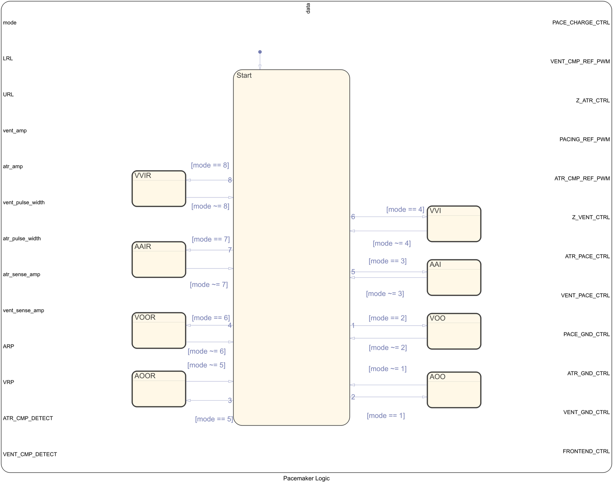
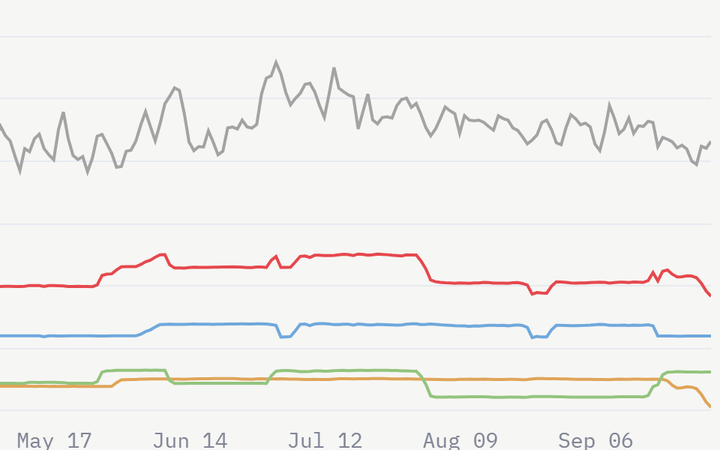
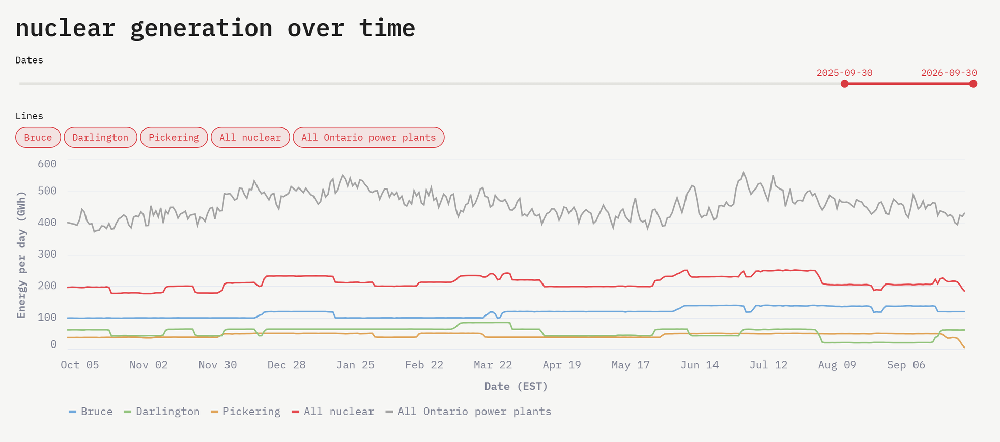
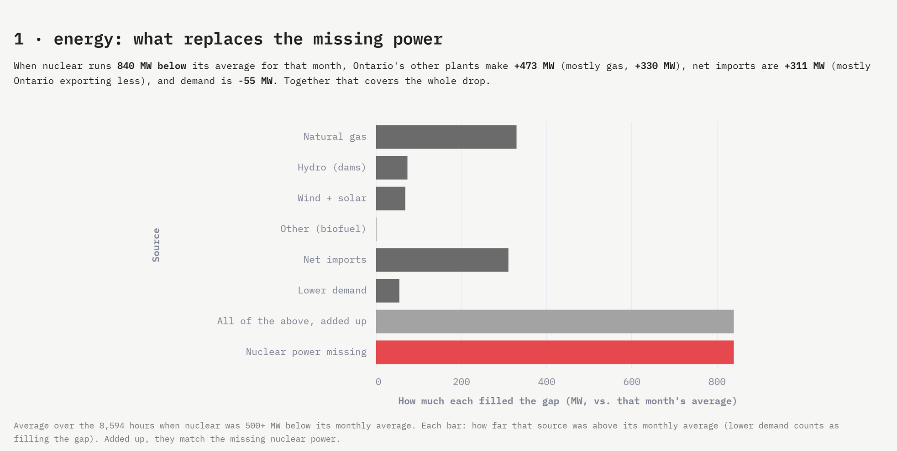

Type a command, or pick one from the bar below. Try .
Lines hard on the eyes? toggles the screen effect.
I build robots, design mechanical parts, and work on nuclear tooling, ranked in ascending order of paperwork.
B.Eng. Mechatronics Engineering Co-op (Level III), McMaster University
Available for a Spring 2027 co-op.
Featured:
Quadruped robot

Rate-adaptive pacemaker firmwareWheelSafe, top 3 of 200+

Ontario nuclear grid analysis
More:
Projects
Quadruped Robot & Locomotion Sim
A 12-servo, 3D-printable quadruped designed in Fusion 360, exported to URDF and simulated in MuJoCo. A trot gait controller makes it stand, walk and turn in place, and drives the real servos through a PCA9685 board on a Raspberry Pi. It walks perfectly in simulation, where friction always behaves.
Pacemaker firmware modelled in Simulink and Stateflow for an NXP FRDM-K64F board, with Embedded Coder generating the C that runs on it. The team model paces in AOO, VOO, AAI and VVI modes. My part was the rate-adaptive modes (AOOR, VOOR, AAIR, VVIR): they read the board's FXOS8700 accelerometer and raise the pacing rate with activity, tuned by threshold, reaction and recovery times. The smooth ramp back down to resting rate turned out not to be required, but the TA liked it.
What happens to Ontario's grid when a reactor goes offline? 11.8 million rows of hourly IESO data in DuckDB, SQL that finds 206 outages of a day or longer, and an interactive dashboard that shows who picks up the slack. Mostly gas and fewer exports, it turns out, at about $4/MWh more and 145 extra tonnes of CO2 an hour. Reactor behaviour is next. I'm learning SQL from scratch, so the queries get noticeably more confident toward the end.
SQL (DuckDB), Python, Streamlit, IESO data Live appRepo


Vision-Guided 2-DOF Robotic Arm
Built in 12 hours, about as long as SolidWorks takes to open. A real-time OpenCV hand-tracking pipeline streams coordinate deltas over UDP to an ESP32, which turns them into smooth stepper motor pulses.
OpenCV, ESP32, C++, UDP
Globe Ghost — iOS GPS Simulator
Sets an iPhone's actual GPS location, not just its IP address like a VPN does, for testing location-aware apps. Includes a live map, scripted routes and a geofence tester. Find My now thinks I've been to California.
An ergonomic, weatherproof wheelchair storage module designed for a client with spina bifida. The 0.4 kg carbon-fiber-reinforced structure reached a 3.25:1 load-to-weight ratio. Placed top 3 of 200+ teams at the McMaster Design Showcase.
Proof-of-concept double wishbone geometry in SolidWorks for McMaster Chem-E-Car's 2026–2027 season. Nothing is built yet: the point was to work out the kinematics and see how the linkage could control dynamic camber to keep a 500 mL sloshing payload stable over a 33 m run. More suspension than a straight line strictly needs, but the camber curves are worth it.
SolidWorks, kinematics, vehicle dynamics
Misc
Click any image to enlarge.
Chem-E-Car transmissionQuadruped assemblyLeg linkageHV discharge testAccidental RF antennaGlobe Ghost field testRebuilt Dell serverNew build, first boot
Experience
Jan 2026 – present
Nuclear Engineering Intern, Eclipse Automation
Tooling design and verification for CANDU sites, including Pickering and international stations. Performed ASD calculations and weldment FEA, wrote FMEAs, and tested CSA N299.2-rated tooling. Nuclear turns out to be roughly 10% tooling, 90% paperwork.
Designing custom wheel assemblies and suspension geometry for the 2026–2027 car, to keep 500 mL of water from sloshing over a 33 m run. Overkill, but the geometry checks out.
2024
Top 3 Finalist, ENGINEER 1P13 Showcase, McMaster University
Placed top 3 of 200+ teams with a carbon-fiber wheelchair storage unit, presented to a panel of P.Eng judges, and survived the questions.
2023 – present
B.Eng., Mechatronics Engineering Co-op (Level III), McMaster University
Statics, dynamics, embedded systems, circuit theory, and math that feels made up until co-op needs it.
Skills
Hardware
STM32, ESP32, Raspberry Pi, PCA9685 / motor drivers, NI Multisim, soldering, 3D printing
One page; every bullet had to earn its spot. Covers nuclear tooling at Eclipse Automation, wheel and suspension design for Chem-E-Car, and projects from an Ontario nuclear grid dashboard to a legged robot and pacemaker firmware.